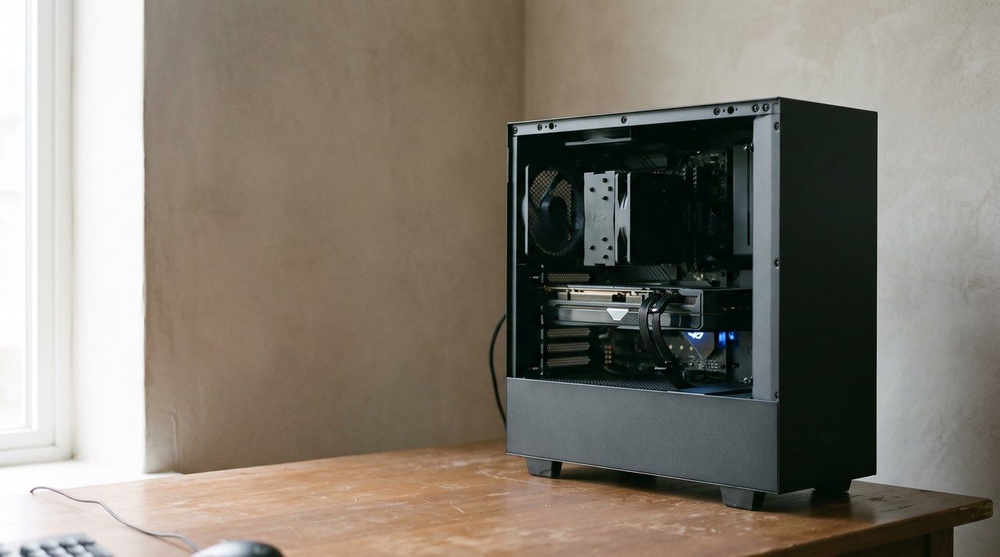

How to install Chatterbox TTS on Windows: the steps, the graphics card fix, and what changed after it was retired

If you want to run Chatterbox TTS on Windows, start by installing Python 3.11 and setting up a virtual environment. If you have an NVIDIA graphics card, install the CUDA version of PyTorch 2.6.0 next, and only then run pip install chatterbox-tts. The model files download the first time you run it. Resemble AI retired this project in August 2026, so it still installs but nobody maintains it. A community launcher with a start.bat file is the easier path.
| pip install (the official way) | Chatterbox-TTS-Server (community) | VoiceClone | |
|---|---|---|---|
| What it is | The Python package from Resemble AI | A launcher with a control page that runs on your PC | Windows app that runs GPT-SoVITS |
| Who makes it | Resemble AI, retired research since August 2026 | A community developer, devnen on GitHub | Me |
| Python setup | You install Python and make the environment | Portable Mode brings its own Python 3.10 | None |
| How it starts | A Python script, or one of the Gradio files in the repository | Double click start.bat | Double click START VoiceClone.bat |
| Graphics card | pip gives you the processor only build of PyTorch first | The launcher detects your hardware | Faster with a card, works on the processor |
| Cost | Free, MIT licence | Free, MIT licence | One voice cloned and trained free, then $49 once |
Written by Inam. I make VoiceClone, a Windows voice cloner built on a different engine, so I am not neutral about the last column. My other engineering notes are on designesh.com. Last updated 20 November 2026.
You probably read that Chatterbox is a free voice cloner, opened its GitHub page, and saw a single line telling you to run pip install chatterbox-tts. On Linux, that one command is almost everything you need. On Windows, the package usually installs without any complaints and then either runs painfully slowly or crashes with a CUDA error, and the page never explains why.
Install Python 3.11, put the CUDA build of PyTorch 2.6.0 in first, then run pip install chatterbox-tts. Getting that order right is what most guides leave out, and it prevents the most common Windows error. I will walk through each step below, and I will also show you an easier community launcher if you prefer not to touch Python at all.
Is Chatterbox still maintained in November 2026?
No, and it is worth knowing this before you spend an evening setting it up. When you open the Chatterbox page on GitHub, the first thing you see is a notice stating that as of August 2026, Chatterbox is retired research and no longer maintained. The code stays public as an archive under the MIT licence, meaning there is no support, no updates, and no paid tier. Resemble AI has shifted its focus to deepfake detection, which I wrote about in what happened to Resemble AI.
For you, this means the installation still works today, but nobody at the company will step in to fix it when a Windows update or a new graphics driver breaks something. When I checked the repository on 20 November 2026, it had around 28,000 stars and 384 open issues. Over on PyPI, which is the public store where pip fetches packages, it was still sitting at version 0.1.7 from 26 March 2026. Any fixes from this point onward have to come from the community or from your own troubleshooting.
What do you need before you install Chatterbox on Windows?
You need Python on your system first, and picking the right version matters here. While the package states it works with Python 3.10 or newer, the authors built and tested it on Python 3.11 running on Debian 11. Because Debian is a Linux system, Windows was never their test environment. I recommend installing Python 3.11 rather than the latest release, because Chatterbox relies on specific dependencies locked to exact versions built for it.
Having an NVIDIA graphics card makes a big difference. The heavy mathematical work runs through CUDA, which is NVIDIA's system for offloading calculations onto the graphics card instead of your main processor. Without a dedicated card, the two larger models will feel very slow. The smallest model, Chatterbox Nano, is designed for regular processors, and the project notes that it runs about 3 times faster than real time on 8 processor cores.
You will also need an active internet connection for the very first run. Running the pip command only downloads the Python code itself. The actual voice model downloads from Hugging Face the first time your script loads it, and after that everything runs locally from your hard drive.
How do you install Chatterbox TTS on Windows, step by step?
Open your Windows Command Prompt and go through these commands one by one. Before installing anything, you will create a virtual environment, which is just an isolated folder for one project's Python packages so Chatterbox does not interfere with other Python tools on your computer.
- Create a folder like
D:\chatterboxand move into it. Keep the folder path short and make sure there are no spaces in the name. - Set up the virtual environment by running
py -3.11 -m venv cband then turn it on withcb\Scripts\activate. You will know it worked when your command prompt line starts with (cb). - If you have an NVIDIA card from the RTX 40 series or older, install the graphics card build of PyTorch first:
pip install torch==2.6.0 torchaudio==2.6.0 --index-url https://download.pytorch.org/whl/cu124. If you have no NVIDIA card, skip this step. - Run
pip install chatterbox-ttsto pull in the remaining files. Give this some time to finish, because PyTorch alone is a hefty download. - Verify that Python sees your graphics card by running
python -c "import torch; print(torch.cuda.is_available())". It should return True, and if it returns False instead, check the next section.
There is a specific reason step 3 has to happen before step 4. Chatterbox locks its PyTorch requirement to exact version 2.6.0. If you install that version with CUDA support first, pip sees the requirement is already met and leaves it alone. If you run step 4 first, pip grabs PyTorch on its own, and on Windows it defaults to the processor only version.
Why does Chatterbox say "Torch not compiled with CUDA enabled"?
Seeing that error means PyTorch was installed without graphics card support, so the device="cuda" line in the sample code has no hardware to connect to. This is the most common Windows problem with Chatterbox, and it does not mean your graphics card is faulty or outdated.
You can fix this by swapping out PyTorch inside the exact same virtual environment. Run pip uninstall torch torchaudio to remove the wrong build, and then run the install command from step 3 again. PyTorch keeps the exact commands for older releases on its previous versions page. Make sure you stick to version 2.6.0, because a newer release breaks the version lock and pip will throw warnings every time you install another package.
If the check in step 5 prints False, you have the processor only PyTorch, and reinstalling version 2.6.0 from the cu124 address fixes it.
Does Chatterbox work on an RTX 50 series card?
This is where that strict version lock causes trouble. I checked PyTorch's download folders on 20 November 2026 to see what was available. Version 2.6.0 includes Windows builds for CUDA 11.8, 12.4, and 12.6, but there is nothing for CUDA 12.8, which is what the newer RTX 50 series cards require. Because of that, the official Chatterbox package and the latest NVIDIA cards do not work together out of the box.
You have two ways to get around this limitation. If you use Python 3.14, the package does allow PyTorch 2.9.0 or newer, though you end up running a combination the original authors never tested. A safer route is using the community launcher covered next, since it includes a dedicated install option for these newer cards. Since this is a retired project, I would not spend time fighting this manually.
Is there a Chatterbox desktop app for Windows?
There is no official desktop app for it. Inside the repository, you will find a few Gradio scripts like gradio_tts_app.py, where Gradio is just a lightweight tool that creates a simple web interface in your browser. Once you download the repository from GitHub and activate your virtual environment, you can run python gradio_tts_app.py. The command window will show a local web address you can open to type in text and upload a voice sample without touching any code.
A simpler path is Chatterbox-TTS-Server, which is a community built tool under the MIT licence with around 1,500 stars. You just double click start.bat, and on Windows it includes a Portable Mode that bundles its own copy of Python 3.10 so you do not have to install anything else. Its launcher checks your hardware automatically and gives you a separate option for graphics cards that require CUDA 12.8. Keep in mind this is maintained by a single volunteer and was last updated in May 2026, so keep your expectations realistic.
Watch out for one confusing search result when looking for a desktop app. CAMB AI offers a Windows program also named Chatterbox, and its setup guide shows up in search results. According to its own overview, that tool translates your speech live during meetings, installs virtual audio drivers, and requires a CAMB AI account. It is completely unrelated to the Resemble AI model and will not do what this page covers.
How do you clone a voice once Chatterbox runs?
To clone a voice, you provide a short, clean audio recording along with the text you want it to speak. The project's sample script uses a reference clip of around 10 seconds, loads the Turbo model, and runs the generate command with your text and audio file path. It outputs the result as a standard wav file. Because there is no model training phase, it generates audio quickly, though it captures the tone of a voice better than a person's specific speaking rhythm. My tips on recording a sample that clones well work well here too.
Keep two things in mind before sharing any audio you create. Every clip Chatterbox generates includes Resemble's Perth watermark, which is an inaudible signal embedded in the audio that I covered in my Chatterbox review. Also, make sure you only clone your own voice or the voice of someone who has given you clear permission.
When is installing Chatterbox not worth it?
Going through this setup makes sense if you are already comfortable with Python, own an NVIDIA card from the RTX 40 series or older, and want a free tool you can control through scripts. For that kind of setup, the five steps above are all you need, and most of your time is spent waiting for files to download.
It is probably not worth the hassle if a broken pip command will leave you stuck, because there is no official support left to help you. In that situation, I would go straight to the community launcher instead. If your main goal is simply having your own voice read English scripts without managing Python environments, that is actually why I built VoiceClone. It runs from a single file, START VoiceClone.bat, takes 10 to 30 minutes on the first setup plus an engine download of about 1.3 GB, and works completely offline on Windows 10 and 11. You can clone and fully train one voice for free with 3 test generations included, and a full licence is $49 once.
Pick Chatterbox with pip if you know Python, pick the community launcher if you do not, and pick a finished app if you only want the voice.
FAQ
Is Chatterbox TTS free?
Yes, both the source code and the voice models are free under the MIT licence, which even permits commercial use. Since Resemble AI retired the project in August 2026, you get it free as is, with no official support or future updates.
Which Python version does Chatterbox need on Windows?
The package supports Python 3.10 or newer, though the developers tested it on Python 3.11. If you are installing via pip, I recommend sticking with Python 3.11. If you use the community launcher instead, it only works with Python 3.10 and bundles its own copy inside Portable Mode.
Can Chatterbox run without an NVIDIA graphics card?
Yes, it can run directly on your main processor, though the larger models will be quite slow. Chatterbox Nano is the lightweight model built specifically for processors, and the project states it runs roughly 3 times faster than real time on 8 processor cores.
Does Chatterbox need the internet after it is installed?
You only need an internet connection to run the pip install and during your very first run, when the model files download from Hugging Face. Once those files are saved on your disk, all speech generation happens offline on your PC.
Sources: the Chatterbox README and its pyproject.toml settings file on GitHub, the chatterbox-tts page on PyPI, PyTorch's previous versions page and its Windows download folders, the Chatterbox-TTS-Server README on GitHub, and CAMB AI's Chatterbox overview and installation pages. I read every one of them on 20 November 2026. VoiceClone facts are from the product page on myvoiceclones.com.
Hear your own voice come back.
The free Windows app clones and fully trains one voice, yours, on your own PC. No account, no upload, and the download starts right away.